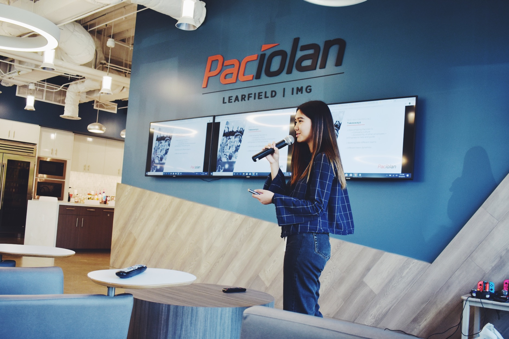

OVERVIEW
As a white-label ticketing services company, Paciolan is the software behind over 300 events and entertainment ticketing, or eVenue, sites. A cross-departmental team of site reliability engineers, eCommerce operations, client partners, and software engineers keep these sites up and ticket sales flowing. One of their primary tools: Chronos.
While I was hired as a Software Intern, working within the Consumer Operations team, I was assigned this project to redesign an internal tool that I myself used daily for by web development duties. The project description: to “redesign Chronos”.
This Chronos redesign was a side project I worked on alongside with my usual workload on the Consumer Ops web development team, and I had the fortune to work alongside two other UX designers who stood in as my mentors for the project. My deliverables were presented at my intern exit presentation in front of not only the Consumer Ops team and Paciolan design team, but also Paciolan's C-level executives.
MY ROLE
- UI/UX Design
- UX Research
- Development
DURATION
- ~8 weeks
TOOLS
- Sketch
- Invision
- Zeplin
TEAM
- 3 Software Engineers
- 2 UX Designer (mentors)

SOLUTIONS
THIS CASE STUDY IS A WORK IN PROGRESS!!
If you really can't wait to learn a bit more about my work, check out this slide deck I presented at my intern exit presentation! Below is a picture of me giving my presentation!
Before
After